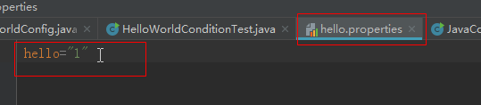
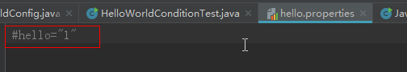
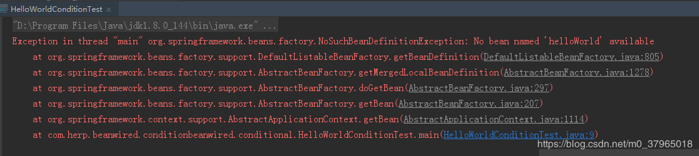

企业级开发中，我们一般有多种环境，比如开发环境、测试环境、UAT环境和生产环境。而系统中有些配置是和环境强相关的，比如数据库相关的配置，与其他外部系统的集成等。
如何才能实现一个部署包适用于多种环境呢？
Spring给我们提供了一种解决方案，这便是条件化装配bean的机制。最重要的是这种机制是在运行时决定该注入适用于哪个环境的bean对象，不需要重新编译构建。
下面使用Spring的profile机制实现dataSource对象的条件化装配。
1、给出开发环境、测试环境、生产环境dataSource的不同实现类
说明：此处只为演示条件化装配bean，不做真实数据源对象模拟。
public interface DataSource {
void show();
}
public class DevDataSource implements DataSource{
public DevDataSource(){
show();
}
public void show() {
System.out.println("开发环境数据源对象");
}
}
public class TestDataSource implements DataSource{
public TestDataSource() {
show();
}
public void show() {
System.out.println("测试环境数据源对象");
}
}
public class ProDataSource implements DataSource{
public ProDataSource() {
show();
}
public void show() {
System.out.println("生产环境数据源对象");
}
}2、使用profile配置条件化bean
其实profile的原理就是将不同的bean定义绑定到一个或多个profile之中，在将应用部署到不同的环境时，确保对应的profile处于激活状态即可。
这里我们使用JavaConfig的方式配置profile bean
@Configuration
public class DataSourceConfig {
@Bean
@Profile("dev")
public DataSource devDataSource(){
return new DevDataSource();
}
@Bean
@Profile("test")
public DataSource testDataSource(){
return new TestDataSource();
}
@Bean
@Profile("pro")
public DataSource proDataSource(){
return new ProDataSource();
}
}可以看到我们使用了@Profile注解，将不同环境的bean绑定到了不同的profile中。
3、激活profile
只要上面的两步还不行，我们还必须激活profile，这样Spring会依据激活的哪个profile，来创建并装配对应的bean对象。
激活profile需要两个属性。
spring.profiles.active
spring.profiles.default可以在web.xml中配置Web应用的上下文参数，来激活profile属性。比如在web.xml中增加如下配置来激活dev的profile：
<context-param>
<param-name>spring.profiles.active</param-name>
<param-value>dev</param-value>
</context-param>4、测试条件化装配
使用@ActiveProfiles注解在测试类中激活指定profile。
@RunWith(SpringJUnit4ClassRunner.class)
@ContextConfiguration(classes = {DataSourceConfig.class})
@ActiveProfiles("dev")
public class TestConditionDataSource {
@Autowired
private DataSource dataSource;
@Test
public void testDataSource(){
Assert.assertNotNull(dataSource);
}
}输出：
开发环境数据源对象我们profile换成生产环境的pro试下，
@RunWith(SpringJUnit4ClassRunner.class)
@ContextConfiguration(classes = {DataSourceConfig.class})
@ActiveProfiles("pro")
public class TestConditionDataSource {
@Autowired
private DataSource dataSource;
@Test
public void testDataSource(){
Assert.assertNotNull(dataSource);
}
}输出：
生产环境数据源对象通过spring的profile机制，我们实现了不同环境dataSource数据源对象的条件化装配。比较简单，就两步：1、使用@Profile注解为不同的bean配置profile（当然这里也可以是xml的方式），2、根据不同环境激活不同的profile。
Spring 4.0引入的新注解@Conditional注解，它可以用到带有@Bean注解的方法上，如果给定的条件计算结果为true，就会创建这个bean，否则不创建。
1、我们创建一个helloWorld对象
public class HelloWorld {
public void sayHello(){
System.out.println("conditional 装配helloworld");
}
}2、创建配置类
在该配置类中我们首先使用了@PropertySource注解加载了属性文件hello.properties，其次可以看到在helloWorld的bean配置中，除了@Bean注解外，多了一个@Conditional注解，不错，@Conditional注解是我们实现条件化装配bean的核心注解。
@Conditional注解中有一个HelloWorldConditional类，该类定义了我们创建该bean对象的条件。
@Configuration
@PropertySource("classpath:hello.properties")
public class HelloWorldConfig {
@Bean
@Conditional(HelloWorldConditional.class)
public HelloWorld helloWorld(){
return new HelloWorld();
}
}3、创建条件类HelloWorldConditional，需要实现Condition接口。
实现了Condition接口，重写了matches方法，在该方法中我们检测了环境变量中是否有hello属性，如果有就创建。没有则忽略。
注意：hello.properties中属性会存储到spring的Environment对象中，因此我们可以检测到其中的属性是否存在。
public class HelloWorldConditional implements Condition {
public boolean matches(ConditionContext conditionContext, AnnotatedTypeMetadata annotatedTypeMetadata) {
return conditionContext.getEnvironment().containsProperty("hello");
}
}4、测试条件装配
public class HelloWorldConditionTest {
public static void main(String[] args) {
ApplicationContext applicationContext = new AnnotationConfigApplicationContext(HelloWorldConfig.class);
HelloWorld helloWorld = applicationContext.getBean("helloWorld",HelloWorld.class);
helloWorld.sayHello();
}
}开始，我们在hello.properties中增加一条属性，

运行测试示例，会输出：
conditional 装配helloworld说明此时，bean已成功装配。
如果我们注释掉hello.properties的这行属性。再次运行示例，则会提示bean不存在。

提示没有“helloWorld”的bean对象，说明了条件不满足不会创建bean对象。

Spring条件化装配bean的两种方式，第一种是使用profile机制，在bean的配置类中使用@profile注解，标识哪些bean对应哪个profile配置，然后在web.xml或Servlet启动参数中配置激活哪个profile来实现条件装配；第二种是使用@Conditional注解，在带有@Bean注解的方法上增加@Conditional注解，在注解属性值中提供一个实现了Condition接口的类（该类会重写matches方法，定义具体的创建条件）。<完>